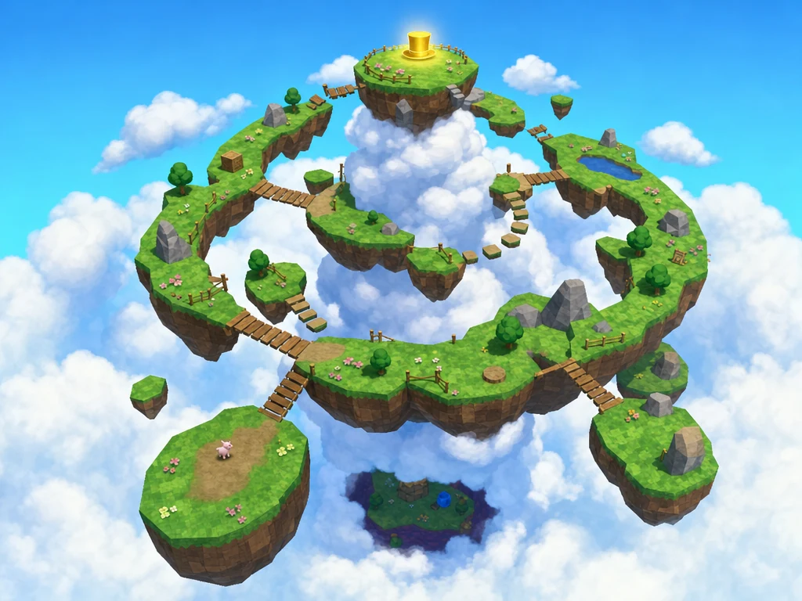

Spot a hat in the distance. Follow a trail of buttons. Miss a landing, find a lower path, and notice a secret on the way back.
Chunky shapes and simple painted textures keep the world readable. The character stays small enough that every bridge feels like an expedition.
Current direction
Keep the first world small.
Hero: the beanie and backpack concept.
Setting: floating grass islands above the clouds.
Layout: a spiral climb with a village return route.
Engine target: Unity, with a third-person camera.
This example includes existing concept studies, saved prompts and camera captures of the Unity prototype. The development board is a reusable starter plan. No playable build is bundled.
Character / 01
Meet Mr. Mak.
Keep the pink nose and enormous ears. Everything else starts with a clear silhouette.
Top hat, monocle and a red waistcoat. A costume direction to keep for later.
Prompts
Saved GPT Image 2 edit prompt · September 2026
Turn this plush piglet into a playable hero of a 1996 N64-era 3D platformer, in the style of Super Mario 64: chunky low-poly geometry, flat bright colors, simple textures. Keep his identity: white fluffy piglet with pink ears, pink snout, brown embroidered eyes and raised eyebrow. Make him a chubby biped with short arms and legs, standing in a cheerful idle pose, full body, slight three-quarter view, plain light background, no text, no labels. Outfit: a tiny black top hat, a monocle and a smart red waistcoat with brass buttons — a distinguished gentleman piglet.
Outfit 02 · Selected
The little explorer
Grey beanie, small backpack, big ears. The selected silhouette for the first level.
Prompts
Saved GPT Image 2 edit prompt · September 2026
Turn this plush piglet into a playable hero of a 1996 N64-era 3D platformer, in the style of Super Mario 64: chunky low-poly geometry, flat bright colors, simple textures. Keep his identity: white fluffy piglet with pink ears, pink snout, brown embroidered eyes and raised eyebrow. Make him a chubby biped with short arms and legs, standing in a cheerful idle pose, full body, slight three-quarter view, plain light background, no text, no labels. Outfit: his grey knitted beanie exactly as in the photo, plus a small brown adventurer backpack.
Blue overalls and a red cap. A more familiar platformer costume.
Prompts
Saved GPT Image 2 edit prompt · September 2026
Turn this plush piglet into a playable hero of a 1996 N64-era 3D platformer, in the style of Super Mario 64: chunky low-poly geometry, flat bright colors, simple textures. Keep his identity: white fluffy piglet with pink ears, pink snout, brown embroidered eyes and raised eyebrow. Make him a chubby biped with short arms and legs, standing in a cheerful idle pose, full body, slight three-quarter view, plain light background, no text, no labels. Outfit: blue denim overalls with big yellow buttons and a red newsboy cap — a classic platformer hero look.
Goggles and a yellow scarf. A second adventure direction.
Prompts
Saved GPT Image 2 edit prompt · September 2026
Turn this plush piglet into a playable hero of a 1996 N64-era 3D platformer, in the style of Super Mario 64: chunky low-poly geometry, flat bright colors, simple textures. Keep his identity: white fluffy piglet with pink ears, pink snout, brown embroidered eyes and raised eyebrow. Make him a chubby biped with short arms and legs, standing in a cheerful idle pose, full body, slight three-quarter view, plain light background, no text, no labels. Outfit: a khaki explorer cap with round goggles resting on it and a little yellow scarf.
A second model's take
The same beanie direction, explored with Grok Imagine 2 edit. Keep alternatives visible so the choice has context.
Jump + double jumpReadable takeoff and landing poses.
AttackA short, clear front-facing action.
Jump attackA distinct airborne strike.
Planned moves. Animation and gameplay checks belong in Development as the build takes shape.
World / 01
The Sky Islands.
A clear destination, a winding route and something worth finding below the clouds.

Base layout reference
Up, around, and underneath.
The spiral gives the player a visible goal. The village adds a reason to return. Use the references as design ingredients, then test the actual jumps in a greybox.
01 / ArriveA safe island to learn the jump.
02 / ExploreButtons lead toward two possible paths.
03 / ClimbLandmarks keep the summit in view.
04 / ReturnA new key opens an old destination.
Six ways to build a world
Bird's-eye layout studies
Layout 01 · Base reference
The upward spiral
A readable climb around a cloud column, with a hidden island beneath the main route.
Prompts
Saved GPT Image 2 edit prompt · September 2026
Create a bird's-eye aerial overview of an entire floating-islands level for a 1996 N64-era 3D platformer in the style of Super Mario 64: detailed low-poly geometry, flat bright colors, simple painted textures, clouds drifting below and between the islands, blue sky. The whole level layout must be readable at once, like a level-design overview shot. This plush piglet is the hero — place him tiny on the starting island for scale. The goal of the level is a glowing golden top hat. Clean image, no HUD, no text, no labels, no watermark. Layout: islands spiral upward around a giant cloud column, connected by plank bridges and jump gaps that force hopping back and forth between the inner and outer ring; the golden top hat floats on the crown island at the very top; a secret island hides UNDER the largest island, reachable through a visible gap in the clouds.
Leave the village to find a key, then return to unlock the hat under the glass dome.
Prompts
Saved GPT Image 2 edit prompt · September 2026
Create a bird's-eye aerial overview of an entire floating-islands level for a 1996 N64-era 3D platformer in the style of Super Mario 64: detailed low-poly geometry, flat bright colors, simple painted textures, clouds drifting below and between the islands, blue sky. The whole level layout must be readable at once, like a level-design overview shot. This plush piglet is the hero — place him tiny on the starting island for scale. The goal of the level is a glowing golden top hat. Clean image, no HUD, no text, no labels, no watermark. Layout: a tiny village spread across islands — cottages, a market square island with striped stalls, a well; the golden top hat sits under a glass dome on the square, and the key floats on a far lonely island, so the route goes out and comes back; a hidden cellar entrance shows under the well.
A windmill and bell tower connected by a route that makes the detour part of the adventure.
Prompts
Saved GPT Image 2 edit prompt · September 2026
Create a bird's-eye aerial overview of an entire floating-islands level for a 1996 N64-era 3D platformer in the style of Super Mario 64: detailed low-poly geometry, flat bright colors, simple painted textures, clouds drifting below and between the islands, blue sky. The whole level layout must be readable at once, like a level-design overview shot. This plush piglet is the hero — place him tiny on the starting island for scale. The goal of the level is a glowing golden top hat. Clean image, no HUD, no text, no labels, no watermark. Layout: a chain of islands, each carrying one structure — a windmill, a cosy cottage, a bell tower — linked by rope bridges; one bridge is broken, forcing a long detour across stepping-stone islets and back; the golden top hat hangs inside a giant birdcage above the bell tower, opened by ringing the bell.
Rotating platforms and clock hands make timing the central challenge.
Prompts
Saved GPT Image 2 edit prompt · September 2026
Create a bird's-eye aerial overview of an entire floating-islands level for a 1996 N64-era 3D platformer in the style of Super Mario 64: detailed low-poly geometry, flat bright colors, simple painted textures, clouds drifting below and between the islands, blue sky. The whole level layout must be readable at once, like a level-design overview shot. This plush piglet is the hero — place him tiny on the starting island for scale. The goal of the level is a glowing golden top hat. Clean image, no HUD, no text, no labels, no watermark. Layout: gear-shaped islands with slowly rotating platforms between them, a clock tower island at the center; timing jumps carry the hero inward and outward across the gears; the golden top hat sits on the clock hands and can only be reached when they align; a secret ledge hides behind the clock face.
A gentler ascent through hedges, waterfalls and a small hidden maze.
Prompts
Saved GPT Image 2 edit prompt · September 2026
Create a bird's-eye aerial overview of an entire floating-islands level for a 1996 N64-era 3D platformer in the style of Super Mario 64: detailed low-poly geometry, flat bright colors, simple painted textures, clouds drifting below and between the islands, blue sky. The whole level layout must be readable at once, like a level-design overview shot. This plush piglet is the hero — place him tiny on the starting island for scale. The goal of the level is a glowing golden top hat. Clean image, no HUD, no text, no labels, no watermark. Layout: terraced hanging-garden islands with hedges and waterfalls pouring into the void, connected by stairs and jump pads; a small hedge maze on the widest terrace hides a secret chest; the golden top hat crowns the fountain on the highest terrace.
A distant lighthouse gives the winding island trail a visible destination.
Prompts
Saved GPT Image 2 edit prompt · September 2026
Create a bird's-eye aerial overview of an entire floating-islands level for a 1996 N64-era 3D platformer in the style of Super Mario 64: detailed low-poly geometry, flat bright colors, simple painted textures, clouds drifting below and between the islands, blue sky. The whole level layout must be readable at once, like a level-design overview shot. This plush piglet is the hero — place him tiny on the starting island for scale. The goal of the level is a glowing golden top hat. Clean image, no HUD, no text, no labels, no watermark. Layout: a winding trail of islands leading to a striped lighthouse island at the far end, with teapot-spring bounce pads and a zip-line rope back to the start; one dark stormy corner island hides a secret cave behind rain clouds; the golden top hat shines inside the lighthouse lamp.
Before the islands
Other locations from the first exploration
Keep these as mood references. They are outside the first level's scope.
A windmill above a winding path. Early mood and scale exploration.
Prompts
Saved GPT Image 2 edit prompt · September 2026
Create a screenshot of a 1996 N64-era 3D platformer in the style of Super Mario 64, starring this plush piglet as the playable hero seen from a third-person camera behind and slightly above him: chunky low-poly geometry, flat bright colors, simple repeating textures, fog in the far distance, cheerful lighting. Clean screenshot, no HUD, no text, no labels, no watermark. Level: rolling green hills with a winding dirt path climbing toward a wooden windmill on a hilltop, plank bridges over a stream, floating stone platforms, rolling acorn enemies with angry faces, golden pocket-watch collectibles hovering along the path.
Oversized garden objects turn ordinary things into platforms.
Prompts
Saved GPT Image 2 edit prompt · September 2026
Create a screenshot of a 1996 N64-era 3D platformer in the style of Super Mario 64, starring this plush piglet as the playable hero seen from a third-person camera behind and slightly above him: chunky low-poly geometry, flat bright colors, simple repeating textures, fog in the far distance, cheerful lighting. Clean screenshot, no HUD, no text, no labels, no watermark. Level: an oversized English garden — giant hedges, a picnic table the size of a plaza with checkered-cloth platforms, giant teacups to hop across, grumpy garden gnome enemies, floating sugar-cube platforms, golden teaspoon collectibles.
Create a screenshot of a 1996 N64-era 3D platformer in the style of Super Mario 64, starring this plush piglet as the playable hero seen from a third-person camera behind and slightly above him: chunky low-poly geometry, flat bright colors, simple repeating textures, fog in the far distance, cheerful lighting. Clean screenshot, no HUD, no text, no labels, no watermark. Level: a low-poly mountain trail with switchback ramps, wooden crates, a cannon aimed at the summit, crow enemies circling above, and a glowing golden top hat floating at the peak as the level's star.
A quiet courtyard that could connect later adventures.
Prompts
Saved GPT Image 2 edit prompt · September 2026
Create a screenshot of a 1996 N64-era 3D platformer in the style of Super Mario 64, starring this plush piglet as the playable hero seen from a third-person camera behind and slightly above him: chunky low-poly geometry, flat bright colors, simple repeating textures, fog in the far distance, cheerful lighting. Clean screenshot, no HUD, no text, no labels, no watermark. Level: a cosy castle courtyard hub with a small drawbridge, round tower where a princess waits at the window, stained-glass star above the door, low-poly trees and a moat.
Build / 01
A world taking shape.
From a beanie piglet and a floating-island sketch to Bellweather Sky in Unity.
Prototype reference
The village above the clouds.
The existing scene brings together the hero, golden buttons, a village and connected islands. Keep captures beside the design references as the game changes.
An overview of the playable-space layout, including the climb and lower routes.
Unity scene capture
Mr. Mak in the scene
The chosen beanie direction translated into an in-engine character.
These are camera renders of the existing Unity scene, reconstructed with its game code. They document the prototype's appearance; gameplay was not re-tested for this template. The Unity project itself is not bundled.
A development board to reuse
Example tasks for your own implementation
Reference ready 3
ART DIRECTION
Approve the beanie silhouette
Keep the selected hero alongside the outfit alternatives.
LEVEL DESIGN
Combine two layout ideas
The spiral climb and the village return route are the base references.
SCOPE
Write the level contract
One level, 100 buttons, five hats and a discoverable secret.
Build next 3
CONTROLLER
Greybox the first island
Run, jump and double jump with a third-person camera. Verify on a real build.
GAMEPLAY
One button, one hat
Count a pickup once. Earn a hat through a short route. Show readable feedback.
CHARACTER
Rig the chosen hero
Start with idle, run and jump. Review feet, silhouette and deformation before export.
Then expand 3
LEVEL
Connect the full route
Use repeatable islands and bridges. Test each gap before dressing it.
COMBAT
Add a readable threat
One roaming enemy, a clear hit response and a jump attack.
PLAYTEST
Hide something worth finding
Place the secret beneath a landmark and check whether a new player notices it.
Five hats, five reasons to explore
The summit: finish the main climb.
The village: find the key and return.
The bell: solve a small landmark interaction.
The hidden ledge: follow a clue below the route.
The challenge: complete a short enemy encounter.
Example challenge breakdown for the next implementation pass.
What a finished milestone proves
A fresh player can move and jump without coaching.
The camera stays useful at bridges and edges.
Collectibles cannot be counted twice.
Falling gives the player a clear way back.
The Workspace contains actual build captures and a short playtest note.
A useful first agent task
Give the next chat a concrete target.
Read projects/my-dream-game/README.md and the selected character and Sky Islands references. Help me build a small Unity prototype with one safe island, a third-person character, run, jump, double jump and one collectible button. Confirm the target project before editing it. Show actual game captures and record what you tested in this Workspace card. Keep all output in English.
This is a handoff example. It does not start a chat or change an editor until you ask an agent to run it.
{kind=link}
{kind=link}
{kind=link}
{kind=link}
{kind=link}
{kind=link}
{kind=link}
{kind=link}
{kind=link}
{kind=link}
{kind=link}
{kind=link}
{kind=link}
{kind=link}
{kind=link}
{kind=link}
{kind=link}
{kind=link}
{kind=link}